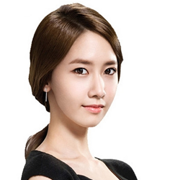

时尚修颜系
-

-
大波浪长卷发
看似凌乱的中分刘海，发尾的微微卷起很好的修饰了脸型，立马拥有巴掌小脸。 -
齐肩半长直发
修剪的极有层次感，带着一种阶梯式的碎发，中分的直发刘海微微往内收瞬间变小脸。
-
瘦脸侧分卷发
凌乱波浪的短发，将脸大部分都遮住了，沿着脸颊摆动下来，让慵懒中透露着几分性感。 -
短发波波头
棕色短发波波头蓬松轻盈，将长脸完全扣住，有灵动感的同时，打造出精致立体的瓜子小脸
清纯减龄系
-
短发蘑菇头
甜美可爱，厚重感刘海发型显露出无比的呆萌感，发尾的内扣起到很好的减龄的效果，纯自然的发色使得整个造型十分有清新感。 -
Half bun半丸子头
发际线两边的“淘气毛”让额头从视觉上窄了一些，减龄显嫩，颠覆了其他发型刻板的形象，显得灵气很多，清爽很多。
-
空气刘海马尾
将黑长直扎一个顺滑的高马尾，清爽大方，带个发饰来修饰，微卷薄碎的空气刘海，格外轻盈俏皮，青春洋溢。 -
侧边马尾
清爽旁分，加上刘海处的精心打理，塑造出清甜、可爱的发型，让你瞬间重返少女时代。
职场御姐系
-
微卷lob发型
侧分的刘海设计御姐范十足，齐肩的lob发型从齐耳处开始带有微卷蓬松感，看起来慵懒又时尚。 -
蓬松微卷大波浪
卷曲的长刘海优雅地耷拉在两颊，御姐成熟妩媚的女性魅力彰显无遗。蓬松的大波浪卷完美地修饰了头型和脸型，很好诠释出御姐冷静与大气的特点。
-
偏分低马尾
适合职场OL日常打理一款发计，蓬松感长发扎简单的低马尾，时尚干练，偏分刘海设计尽显知性优雅。 - 
-
自然蓬松卷发
散发出活力弥漫的气息，优雅的长发尽显女生的时尚气场，随意飘逸，流露出一股时尚浪漫的唯美气息